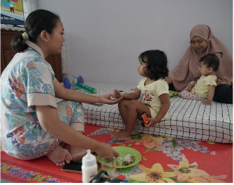

Griya Karuna adalah yayasan sosial non-profit yang didirikan untuk mendampingi anak dari keluarga prasejahtera dengan penyakit non-infeksius.

Mewujudkan rumah singgah yang menjadi tempat tinggal sementara untuk singgah penuh harapan, dukungan dan kenyamanan bagi pasien anak penyakit non – infeksius dalam menjalani proses pengobatan dan pemulihan serta memberikan pendampingan bermain dan belajar kepada anak-anak yang sedang menjalani masa pengobatannya.
Menyediakan tempat tinggal sementara yang layak dan ramah anak.
Menjalin kerja sama dengan instansi pemerintah, lembaga sosial dan masyarakat untuk memperluas jangkauan dan dampak program.
Menciptakan lingkungan yang aman dan penuh empati.
Membangun komunitas yang inklusif dan berempati, yang mendorong para penghuni pasien anak dan pendampingnya untuk bangkit dan berdiri.
Menyediakan akses informasi dan pendampingan untuk mendapatkan layanan kesehatan.
Pertemuan perdana para pendiri yang menjadi awal mula berdirinya Griya Karuna.
Kunjungan para pendiri ke RSUP Dr. Sardjito untuk memperkenalkan Griya Karuna.
Penyewaan rumah yang akan digunakan sebagai Rumah Singgah Griya Karuna.
Peresmian Griya Karuna.
Kami berkomitmen menjaga lingkungan yang aman, nyaman, dan mendukung proses pemulihan anak.
Pembina
Ketua Yayasan
Bendahara
Koordinator
General Affairs
Pengajar
Griya Karuna didukung oleh berbagai mitra dan komunitas yang peduli terhadap kesehatan anak. Kolaborasi ini membantu kami menjangkau dan mendampingi lebih banyak keluarga yang membutuhkan.